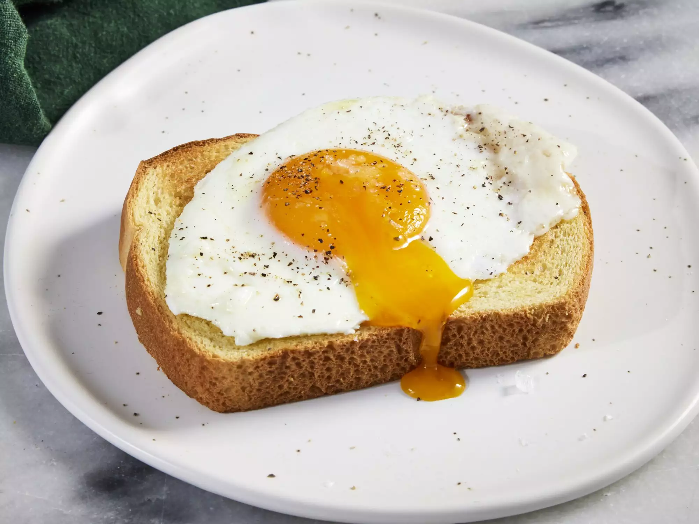

Basted eggs

Description
This recipe produces a delicious, simple egg with satisfying, set whites and a creamy, runny yolk. It's similar to a poached egg, but more flavorful and less fussy.
Ingredients
- 1 ½ tablespoons salted butter
- 2 large eggs
- 1 tablespoon water
- ⅛ teaspoon freshly ground black pepper
- 1 pinch flaky sea salt, or to taste